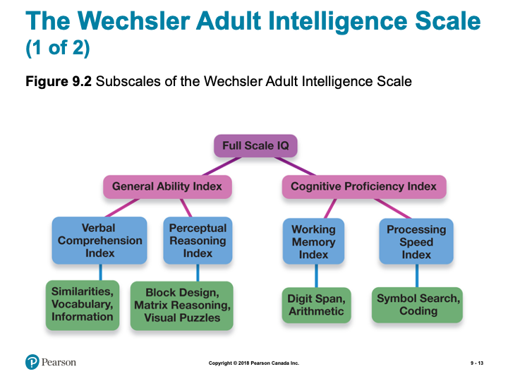
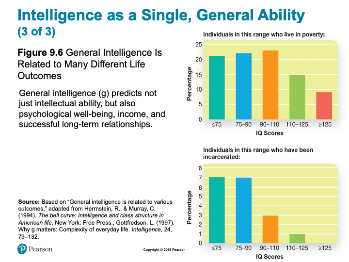
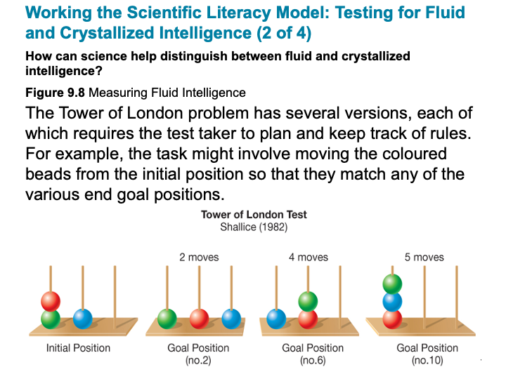
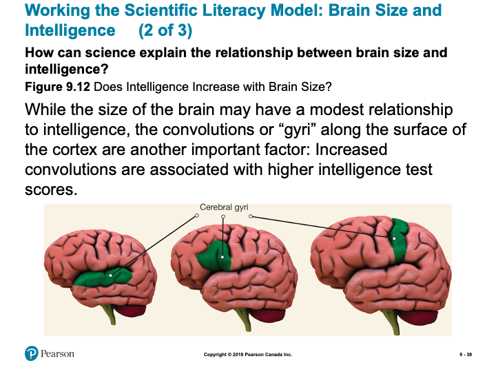
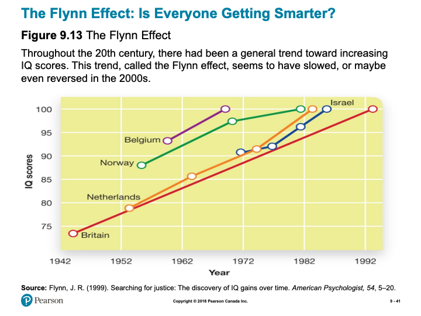

Unit 2 Intelligence Testing
Overview
In this unit, you will learn about techniques and tools for measuring intelligence, different theories as to what constitutes intelligence, and the biological, environmental, and behavioural factors that influence intelligence.
Topics
This unit is divided into the following topics:
- What is Intelligence?
- Extremes of Intelligence
- Nature-Nature and IQ
Learning Outcomes
By the end of this unit, students will be able to:
- Know and define the key terminology associated with understanding intelligence, intelligence testing, and heredity, environment, and intelligence.
- Understand the reasoning behind the eugenics movements and its use of intelligence tests, why intelligence is divided into fluid and crystallized types, and the genetic basis of intelligence.
- Apply the concepts of entity theory and incremental theory to help kids succeed in school, to identify examples from the triarchic and multiple theories of intelligence, and to recognize environmental and behavioural effects on intelligence to understand how to enhance your own cognitive abilities.
- Analyze why it is difficult to remove all cultural bias from intelligence testing and whether teachers should spend time tailoring lessons to each individual student’s learning style.
Activity Checklist
Here is a checklist of learning activities you will benefit from in completing this unit. You may find it useful for planning your work.
Read and Reflect
- Read Krause et al. (2021). Revel for An Introduction to Psychological Science, 3rd Canadian Edition
- Review Unit 2 - Slides
CLICK HERE
Agenda
- Chapter 9 – Intelligence Testing
- Biblical Word Study Related to Ch. 8
Proverbs 2:6
- For the LORD gives wisdom, and from his mouth come knowledge and understanding.
Greek Word Study
- Wisdom
- Gr. \(\Sigma\omicron\phi\iota\alpha\) (Sophia) (Noun) – wisdom in general, knowledge; ability; practical wisdom, prudence; learning, science; scientific skill; professed wisdom, human philosophy, superior knowledge and enlightenment; in N.T. divine wisdom, Christian enlightenment
- Gr. \(\Sigma\omicron\phi\iota\alpha\) (Sophia) (Noun) – wisdom in general, knowledge; ability; practical wisdom, prudence; learning, science; scientific skill; professed wisdom, human philosophy, superior knowledge and enlightenment; in N.T. divine wisdom, Christian enlightenment
- Wise
- Gr. \(\Sigma\omicron\phi\omicron\varsigma\) (Sophos) (Adjective) – wise generally; shrewd, clever; learned, intelligent; in N.T. divinely instructed; furnished with Christian wisdom, spiritually enlightened
- Intelligence
- Gr.\(\Sigma\upsilon\nu\eta\sigma\iota\varsigma\) (Noun) – pr. a sending together, a junction, as of streams; met. understanding, intelligence, discernment; the understanding, intellect, mind
- Gr.\(\Sigma\upsilon\nu\eta\sigma\iota\varsigma\) (Noun) – pr. a sending together, a junction, as of streams; met. understanding, intelligence, discernment; the understanding, intellect, mind
- Intelligent
- Gr. \(\Sigma\upsilon\nu\eta\tau\omicron\sigma\) (Synetos) (Adj.) – intelligent, discerning, wise, prudent (cautious; worldly wise; exercising sound judgment)
The Psychology of Wisdom
- Difficult life dilemmas:
- “A 15yearold girl wants to get married right away. What should one/she do and consider?”
- Or, “Imagine a good friend of yours calls you up and tells you that she can’t go on anymore and has decided to commit suicide. What would one/you be thinking about? How would one deal with this situation?”
- Or, “A 60 year old widow has recently completed a college degree and opened a business, only to learn that her son has been left alone with two small children to care for. What should she do?”
Chapter 9 : Intelligence Testing

Modules
9.1 Learning Objectives
- Know the key terminology associated with intelligence and intelligence testing.
- Understand the reasoning behind the eugenics movements and its use of intelligence tests.
- Apply the concepts of entity theory and incremental theory to help kids succeed in school.
- Analyze why it is difficult to remove all cultural bias from intelligence testing.
Different Approaches to Intelligence Testing (1 of 2)
- Sir Francis Galton
- Anthropometrics (p. 329)
- Anthropometrics (p. 329)
- Alfred Binet
- Intelligence (p. 330)
- Mental age (p. 330)
- Intelligence (p. 330)
- Lewis Terman
- Stanford-Binet Test (p. 330)
- Stanford-Binet Test (p. 330)
- William Stern
- Intelligence Quotient (IQ) (p. 330)

Slide showing - The Normal Distribution of Scores for a Standardized Intelligence Test

Slide showing - Subscales of the Wechsler Adult Intelligence Scale

Slide showing - The Wechsler Adult Intelligence Scale

Slide showing - Sample Problem from Raven’s Progressive Matrices
The Checkered Past of Intelligence Testing
- IQ Testing and Eugenics
- Historical context
- Social Darwinism
- Eugenics
- Historical context
The Race and IQ Controversy
- Racial differences in IQ scores Problems with the racial superiority interpretation
- Culturally biased test content
- Culturally biased test process
- Stereotype threat (p. 336)
- Culturally biased test content
Working the Scientific Literacy Model: Beliefs About Intelligence (1 of 3)
- What do we know about the kinds of beliefs that may affect test scores?
- Entity theory (p. 336)
- Incremental theory (p. 336)
- Entity theory (p. 336)
- How can science test whether beliefs affect performance?

Slide showing - Personal Beliefs Influence Grades
Working the Scientific Literacy Model: Beliefs About Intelligence (3 of 3)
- Can we critically evaluate this research?
- Why is this relevant?
9.2 Learning Objectives
- Know the key terminology related to understanding intelligence.
- Understand why intelligence is described as a hierarchy.
- Understand intelligence differences between males and females.
- Apply your knowledge to identify examples that reflect fluid vs. crystallized intelligence.
- Analyze whether teachers should spend time tailoring lessons to each individual student’s learning style.
Intelligence as a Single, General Ability (1 of 3)
- Spearman’s general intelligence
- General intelligence factor, “g” (p. 340)

Slide showing - General Intelligence Is Related to Many Different Life Outcomes

Slide showing - General Intelligence Is Related to Many Different Life Outcomes
Spearman’s General Intelligence
- Does “g” tell us the whole story?
Intelligence as Multiple, Specific Abilities
- Spearman
- Two factors: “g” and “s”
- Two factors: “g” and “s”
- Thurstone
- 7 primary mental abilities
- 7 primary mental abilities
- Hierarchical model of intelligence
- Nesting

Slide showing - Fluid and Crystallized Intelligence

Slide showing - Measuring Fluid Intelligence

Slide showing - Measuring Crystallized Intelligence
Working the Scientific Literacy Model: Testing for Fluid and Crystallized Intelligence (4 of 4)
- Can we critically evaluate crystalized and fluid intelligence?
- Gf is a blend of several different cognitive abilities
- Gf and Gc are not entirely separable
- Gf is a blend of several different cognitive abilities
Why is this relevant?
- Stereotypes related to intelligence and age

Slide showing - Gardner’s Proposed Forms of Intelligence

Slide showing - Gardner’s Proposed Forms of Intelligence
Myths in Mind: Learning Styles
- Visual learners should learn more with visual materials?
- Lack of supporting evidence
- Lack of supporting evidence
- Focus on learning the meaning
PSYCH @ The NHL
- Head injuries in the NHL
- Chronic traumatic encephalopathy
- ImPACT
- Regular testing checks for declines on specific abilities
The Battle of the Sexes?
- Differences in intelligence?
- No sex differences found
- Male scores have greater variability
- No sex differences found
- Do males and females have unique cognitive abilities?
- Females: verbal, memory, emotions
- Males: visuospatial
- Stereotype threat
- Females: verbal, memory, emotions
9.3 Learning Objectives
- Know the key terminology related to heredity, environment, and intelligence.
- Understand different approaches to studying the genetic basis of intelligence.
- Apply your knowledge of environmental and behavioural effects on intelligence to understand how to enhance your own cognitive abilities.
- Analyze the belief that older children are more intelligent than their younger siblings.

Slide showing - Intelligence and Genetic Relatedness
Working the Scientific Literacy Model: Brain Size and Intelligence (1 of 3)
- What do we know about brain size and intelligence?
- Once believed brain size was related to intelligence
- Contributed to prejudice
- Once believed brain size was related to intelligence

Slide showing - Does Intelligence Increase with Brain Size?
Working the Scientific Literacy Model: Brain Size and Intelligence (3 of 3)
- Can we critically evaluate the issue?
- Which abilities underlie the correlation?
- Third-variable problem
- Which abilities underlie the correlation?
- Why is this relevant?
- Brain size and IQ used to understand clinical conditions
- Prolonged anorexia nervosa and alcohol abuse
- Brain size and IQ used to understand clinical conditions
Environmental Influences on Intelligence
- Nutrition
- Socioeconomic Status (SES)
- Stress
- Birth Order
- Education

Slide showing - The Flynn Effect
Behavioural Influences on Intelligence
- Brain training programs
- Nootropic drugs (p. 358)
Note: the slides are intended to supplement the information found in your textbook. If you are having trouble viewing them, they can also be downloaded by scrolling to the bottom of the screen and clicking on the “Unit 2 - Slides” link.*
Intelligence Testing
- Take some intelligence tests for yourself. As you complete them, consider how they might be considered beneficial, and controversial, as measures of intelligence.
I.Q. Testing
- Take some I.Q. Tests. Consider how valid and reliable these results are and think about how meaningful the results are.
Ch. 9 Key Terms Quiz
- Practice quiz to assess how well you know key terms from Chapter 9.
- Not for formal evaluation.
- Each topic will provide a question or scenario for you to consider prior to attending your Learning Lab. Be sure to carefully consider each prompt as you will be expected to contribute to the group discussion.
2.1 What is Intelligence?
Intelligence
As David Myers points out, intelligence is a slippery concept. We all have an idea of what it refers to, but we cannot agree on a single definition. Perhaps the most helpful advice is to remember, as Myers points out, that “intelligence is a socially constructed concept. Cultures deem ‘intelligent’ whatever attributes enable success in those cultures” (2010). Historically, in North American culture, the idea of intelligence performance on an IQ test. The composition of these tests reflected North American culture’s emphasis on particular mental abilities, specifically, those associated with success in an academic setting. More recently, we have come to realize that there are many kinds of intelligence. In this unit we will consider some varieties of intelligence, or multiple intelligences.
Types of Intelligence
Emotional Intelligence
I have to admit that when I first heard of emotional intelligence (EI) I was skeptical. It sounded like popular psychology - someone trying to make a buck preying on our need for self-knowledge. However, upon further investigation I found that EI was linked to social intelligence (the ability to understand and relate to people), a concept developed by the pioneering psychologist E.L. Thorndike in 1920. And upon still further investigation, I found EI made a lot of sense.
2.2 Sternberg’s Three Components of Intelligence
Robert Sternberg wanted to show that intelligence was more than just one general ability (known as g theory). He believed our intelligence is best classified into three areas that predict real - world success: analytical, creative, and practical. The following article does a great job explaining the Triarchic Theory of Intelligence and its three sub-theories. It also makes note of the criticisms that have been brought against this theory. To better understand Sternberg’s Three Components of Intelligence follow the link below:
2.3 Gardner’s Eight Types of Intelligence
Howard Gardner put together a robust, research-based theory of Multiple Intelligences. He put forth an understanding of intelligence promoting our abilities are best classified into nine independent intelligences, which include a broad range of skills beyond traditional school smarts. This illuminating read that can help you understand what your primary intelligences are. Follow the link below:
Resources: Online Articles of Interest
To add to your exploration of this topic, take a moment to read the following articles:
Learning Activity
Intelligence Testing
In this unit we investigated Intelligence Testing. One of the important concepts we learned was that Intelligence Testing can be controversial due to its socially constructed nature.
Below is a link to a website that will allow you to take some Intelligence Tests for yourself. As you work through each test, and see the results, think about why we might consider these types of tests beneficial, and why they might be considered controversial.
Learning Lab Preparation
Our Learning Lab for this unit will focus on Intelligence Testing. As we have seen, Intelligence Testing is best implemented after careful consideration - this will be the focus of our discussion during this unit’s Learning Lab. To help you prepare, consider the following questions:
- How do you feel about the EMOTIONAL INTELLIGENCE TESTS? Did you learn anything? If so, what were the important areas that were illumined by the test?
- Is ‘emotional intelligence’ a valid concept worth measuring?
- Do you believe E-IQ is more important than “intelligence” as measured by IQ scores for success and happiness in your life?”
2.4 Extremes of Intelligence
IQ Testing
In this section we continue to build upon our understanding of intelligence and testing to focus on Intelligence tests and those who score at the “extremes.” Intelligence tests are the most common tool used to measure intelligence. Intelligence test are one method of assessing an individual’s mental aptitudes and comparing them with those of others using numerical scores. These scores are then plotted on a normal (bell) curve to estimate where a person’s intelligence rates in relation to a standardized population. The extremes of intelligence is the understanding that on one end of the continuum are those with intellectual disabilities and on the other end are those who are geniuses.
Resources
To supplement our understanding of this topic, take a moment to explore the following resources:
Learning Activity
IQ Testing
After considering the above, and having read the textbook’s discussion of intelligence testing, you might want to try some tests yourself. The value in doing this is not that you will get an accurate idea of your IQ score, but rather that you might get a better understanding for some of the problems in testing. As you try some of the tests at the following sites, remind yourself of the problems of test standardization, validity, and reliability. How well do you think these tests measure up?
Learning Lab Preparation
As we prepare for our Learning Lab this week, we consider intelligence from a Christian perspective. Read the following passage and carefully consider the questions below to help prepare for our discussion:
The Bible says, in James; Chapter 2:
My brothers, as believers in our glorious Lord Jesus Christ, don’t show favoritism. Suppose a man comes into your meeting wearing a gold ring and fine clothes, and a poor man in shabby clothes also comes in. If you show special attention to the man wearing fine clothes and say, “Here’s a good seat for you,” but say to the poor man, “You stand there” or “Sit on the floor by my feet,” have you not discriminated among yourselves and become judges with evil thoughts?
- Could we be guilty of favoritism in esteeming more intelligent people above less intelligent people? In society? In Church?
2.5 Nature-Nature and IQ
While the debate rages over the relative contributions of nature and nurture to IQ, no one denies that heredity (nature) plays some role. The question arises then, “So what?” Are we going to try to control (and presumably increase) IQ through genetic engineering or some other method of eugenics (Eugenics is the search for hereditary factors that give people an evolutionary advantage; translated it can mean “good genes” or “good origin”)? Are we going to control who should have children and how many, allowing the most intelligent parents to have more children and restricting the less intelligent? When the genetic basis for IQ (or some other component of intelligence) is identified, will parents select embryos with greater potential? For more on this topic see the following quote and the website from which it came.
“If we are concerned for the future of the (hopefully) millions of generations still to be born, we must realize that their fate lies to a considerable extent in the breeding practices of those who are currently alive.” (Intelligence and Eugenics)
2.6 What Will You Do?
If or when you have children, will you ban screens (TV, smart phone, tablet, laptop) as a “brain rotter” and read to them every day? Or will you just let nature take its course and allow both screens and reading?
2.7 Test Biases?
IQ tests are generally valid for their original purpose—as predictors of academic performance. Controversy arises when IQ scores are taken to mean overall intelligence and even overall worth. IQ scores consistently predict that some cultural and racial groups will do better at school than will other groups. These differences are an indication of bias not in the IQ tests but in the backgrounds and academic settings that first create and then magnify differences.
Resources
To supplement our understanding of this topic, take a moment to read through the following:
Learning Activity
Ch. 9 Key Terms Quiz
In order to review some of the major terms from Chapter 9 in your textbook, take the following unmarked quiz. Although you will not be evaluated on these terms, they will assist you in the assessments for this course:
Learning Lab Preparation
Consider the following scenario (and questions) as you continue to prepare for this unit’s Learning Lab. You will be asked to share your thoughts so come prepared
*If you suggest that Asians have darker skin than Caucasians, you are not considered racist; this is an obvious fact with a genetic basis. However, if you suggest that Asians are more intelligent than Caucasians (as IQ tests show), or that African Americans are less intelligent, watch out
- What is different about these two claims that makes us accept one and not the other? Is it the role of nature versus nurture? Or is it more closely tied to the high value our culture places on intelligence, and especially IQ scores?
- If IQ were unimportant would it matter if one racial or gender group tended to score higher than another group? Would you be considered racist or sexist for suggesting this?
Assessment
While there is no “formal” assignment that you will be responsible for submitting for Unit 2, you will be expected to participate in discussion during your Learning Lab. Your facilitator will be providing a participation mark based on your contributions. Below is some information to consider prior to attending your Learning Lab:
Active participation in group exercises, reflection, and critical discourse is an essential component of this course. You are expected to show respect for all members of the course, both in your speech and actions. Contribute by actively observing and listening, raising thoughtful questions, examining relevant issues, building on others’ ideas, analyzing and evaluating the group’s thinking, synthesizing key points, and expanding the group’s perspectives. Take care not to dominate a conversation, giving space for others to speak. When in small groups help maintain the focus, flow, and quality of conversations, and take the initiative to invite others (particularly those who are quiet) to speak.
Rubric for Participation in Learning Labs
| Emerging (0-64%) | Developing (65-89%) | Mastering (90-100%) |
|---|---|---|
| Never to almost never: Demonstrates active listening (as indicated by disengaged body language and no to rare comments that build on others’ remarks), Initiates any contributions in class or small groups, Makes insightful or constructive comments, Helps maintain a supportive space for others to speak. | Sometimes to fairly often: Demonstrates active listening (as indicated by somewhat to often engaged body language and comments that build on others’ remarks), Initiates a contribution at least once in a class or small group discussion; Makes insightful or constructive comments, Helps maintain a supportive space for others to speak. | Very often to nearly always: Demonstrates active listening (as indicated by fully engaged body language and comments that build on others’ remarks), Initiates more than one contribution in a class or small group discussion, Makes insightful or constructive comments, Creates a space for others to speak and takes initiative to include others. |
Checking your Learning
Before you move on to the next unit, check that you are able to:
- Define the key terminology associated with understanding intelligence, intelligence testing, and heredity, environment, and intelligence.
- Understand the reasoning behind the eugenics movements and its use of intelligence tests, why intelligence is divided into fluid and crystallized types, and the genetic basis of intelligence.
- Apply the concepts of entity theory and incremental theory to help kids succeed in school, to identify examples from the triarchic and multiple theories of intelligence, and to recognize environmental and behavioral effects on intelligence to understand how to enhance your own cognitive abilities.
- Analyze why it is difficult to remove all cultural bias from intelligence testing and whether teachers should spend time tailoring lessons to each individual student’s learning style.